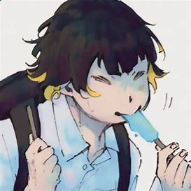

Meguru Bachira
Driblador


Sobre
Bachira é um atacante caprichoso que joga seguindo seus instintos e quando chegou ao Blue Lock ele foi um membro da Equipe Z durante a Primeira Seleção.
Seu principal objetivo era encontrar rivais de futebol para jogar, que também têm um "monstro" dentro deles, mas que mais tarde muda para se tornar o melhor atacante do mundo quando ele supera seu trauma de infância.